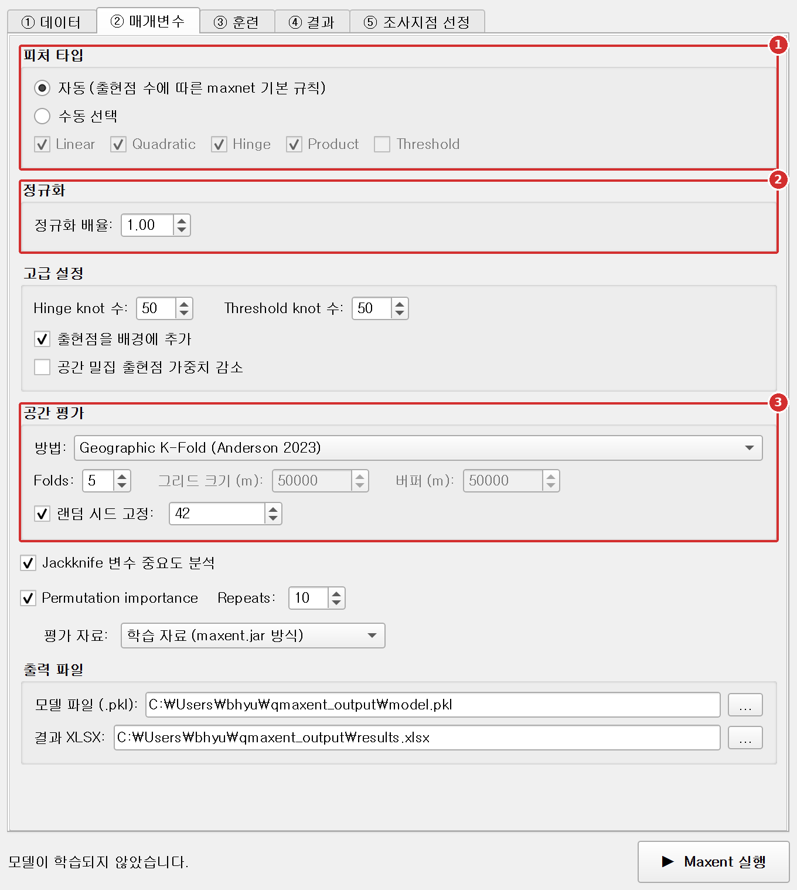
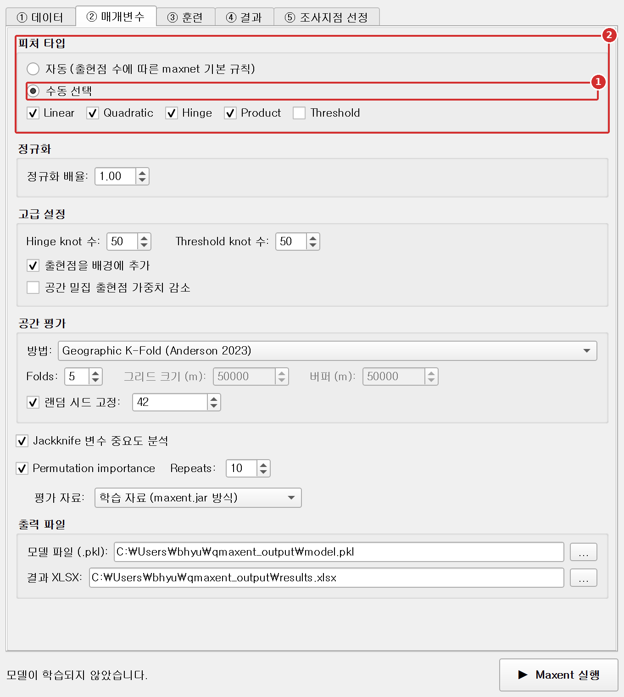
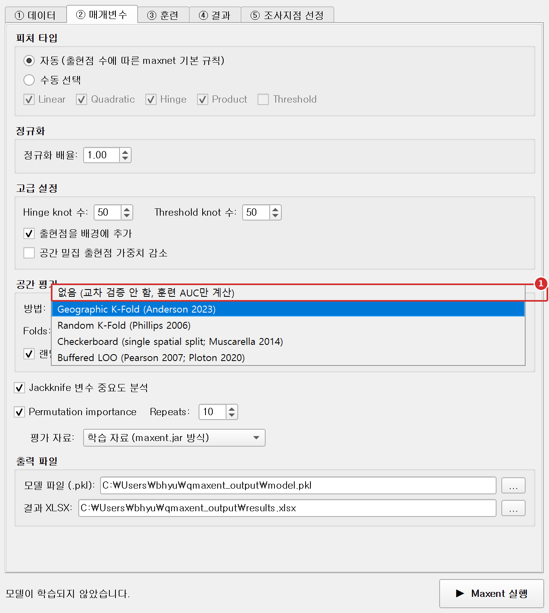
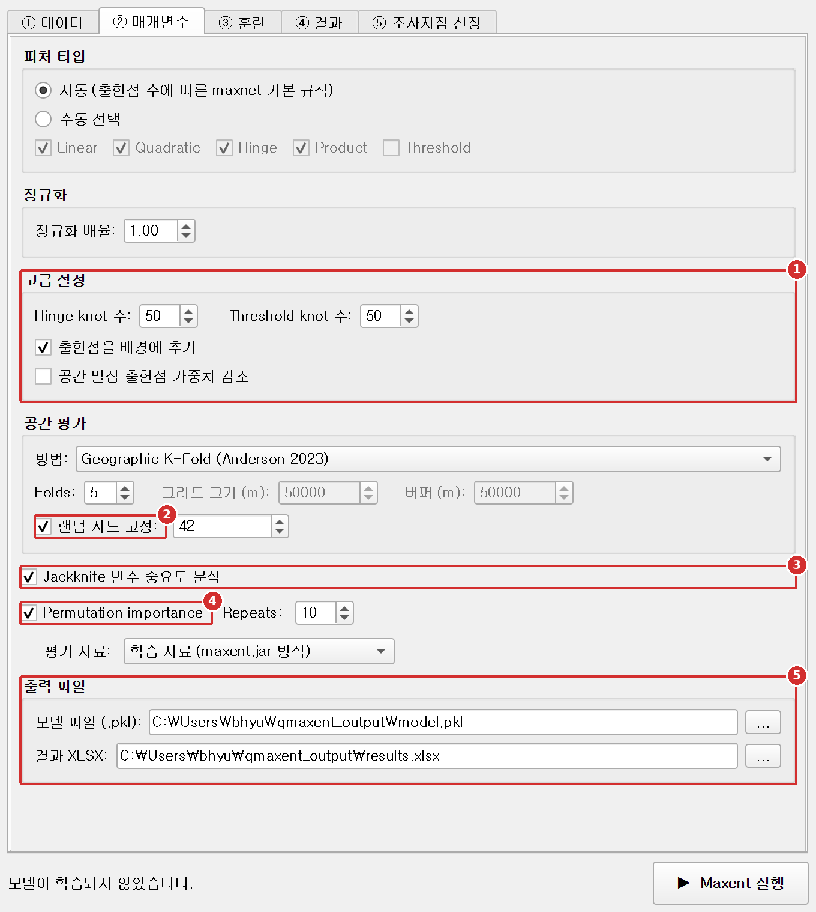

② 파라미터 탭¶
Parameters 탭은 모델링 및 평가 설정을 제어합니다 — 허용할 Maxent 피처 클래스, 정규화 배수, 공간 교차검증 방식, 출력 경로. 기본값은 정립된 Maxent 관행을 따르며, 본 장에서는 각 컨트롤이 무엇을 하고 언제 기본값을 변경해야 하는지 설명합니다.
단계별 따라하기¶
1단계. 주요 설정 확인¶

- 피처 타입: 특별한 이유가 없으면 자동 (출현점 수에 따른 maxnet 기본 규칙)을 그대로 둡니다.
- 정규화: 정규화 배율은 모델을 얼마나 단순하게 만들지 정합니다. 값이 클수록 단순한 모델이 됩니다.
- 공간 평가: 모델을 검증하는 방법, Folds(폴드 수), 같은 결과를 다시 얻기 위한 랜덤 시드 고정입니다.
2단계. (선택) 피처 종류 직접 고르기¶

- 수동 선택을 고릅니다.
- 쓸 피처를 체크합니다: Linear(선형), Quadratic(이차), Hinge(힌지), Product(곱), Threshold(임계).
3단계. (선택) 다른 평가 방법 고르기¶

- 방법 목록을 엽니다. 기본값 Geographic K-Fold가 대부분의 자료에 가장 안전합니다. 다른 방법은 아래 공간 평가 절에서 설명합니다.
4단계. 중요도 옵션과 출력 파일 확인¶

- 고급 설정: Hinge/Threshold knot 수, 출현점을 배경에 추가, 공간 밀집 출현점 가중치 감소입니다. 대부분은 기본값이면 됩니다.
- 랜덤 시드 고정은 실행할 때마다 폴드와 배경점 표본을 똑같이 유지합니다.
- Jackknife 변수 중요도 분석은 변수마다 모델을 추가로 학습해 중요도를 잽니다. 실행 시간이 길어집니다.
- Permutation importance는 변수 값을 뒤섞었을 때 모델 성능이 얼마나 떨어지는지 잽니다.
- 출력 파일: 모델(
.pkl)과 결과 통합문서(.xlsx)가 저장될 위치입니다. ...로 바꿀 수 있습니다.
그다음 도크 아래의 ▶ Maxent 실행을 누릅니다.
피처 유형¶
Maxent의 "피처"는 각 환경 변수에 대한 적합도 반응을 표현하는 기저 함수입니다. 다섯 개 클래스(LQPHT)는 다음과 같습니다:
| 피처 | 기호 | 표현 |
|---|---|---|
| Linear | bio1 |
단조 선형 반응 |
| Quadratic | bio1² |
최적점 형태 반응 |
| Hinge | max(0, bio1 − threshold) |
조각별 선형 / 매우 유연 |
| Product | bio1 × bio7 |
쌍별 상호작용 |
| Threshold | 1[bio1 > threshold] |
계단 반응 |
자동 (출현점 수에 따른 maxnet 기본 규칙)¶
기본값입니다. QMaxent는 Maxent 개발자들의 R 구현인 maxnet 패키지의 기본 피처
규칙(maxnet.formula(classes = "default"),
Phillips et al. 2017)을 출현점 수에 따라 적용합니다:
| 출현점 수 | 사용하는 피처 |
|---|---|
| 10개 미만 | L |
| 10~14개 | LQ |
| 15~79개 | LQH |
| 80개 이상 | LQPH |
threshold 피처는 maxnet과 마찬가지로 자동으로 추가되지 않습니다. 필요하면 수동 선택 에서 직접 고르세요. 116점 Bradypus 예제에는 LQPH가 적용됩니다.
threshold 피처를 자동 규칙에서 뺀 이유 (v0.2.0)
v0.1.x는 maxent.jar의 auto features처럼 출현점 80개 이상에서 threshold까지 켰습니다(LQPHT). 그런데 elapid의 scikit-learn 백엔드는 모든 피처에 같은 정규화 강도를 적용하므로 threshold 피처가 과적합됩니다. Bradypus 자료의 Random 10-fold 검증 AUC는 QMaxent LQPHT 0.873, QMaxent LQPH 0.890, maxent.jar LQPHT 0.895였습니다.
이 규칙은 기본값일 뿐 최적 모델을 보장하지 않습니다. 가장 알맞은 피처 유형은 자료에 따라 다르므로, 수동 선택 과 교차검증으로 여러 조합을 비교하거나 ENMeval(Muscarella et al. 2014) 같은 모델 선택 도구를 함께 쓰세요.
수동 선택¶
수동 선택 (Manual selection)을 고르면 LQPHT의 어떤 조합이든 직접 켜고 끌 수 있습니다. 처음에는 Linear, Quadratic, Product, Hinge가 체크되어 있고 Threshold는 해제되어 있습니다. 다음 경우에 유용:
- 다른 발표 연구 재현 — 특정 피처 부분집합을 사용한 경우
- 과적합 진단 — Hinge와 Threshold를 끄면 AUC를 약간 잃지만 더 부드러운 반응곡선
- 민감도 분석 — 어떤 피처 클래스가 예측을 주도하는지 이해
정규화¶
정규화는 Maxent가 계수를 0 쪽으로 얼마나 강하게 줄이는지를 제어합니다 — 분산을 편향과 직접 교환합니다. 배수 가 기본 정규화를 스케일링하며, 1보다 크면 더 부드럽고 단순한 모델, 1보다 작으면 더 가깝게 적합합니다.
| 배수 | 효과 | 사용 시점 |
|---|---|---|
| 0.5 | 더 유연, AUC 높음, 과적합 위험 높음 | 강한 근거와 CV 기반 점검이 있을 때만 |
| 1.0 (기본) | 표준 Maxent 정규화 | 대부분의 연구 |
| 2.0–4.0 | 부드러운 반응, 더 나은 외삽 | 작은 데이터셋, 넓은 환경 그래디언트 투영 |
확신이 없으면 1.0으로 두고 교차검증 AUC를 확인하세요. 학습 AUC가 CV AUC보다 훨씬 높으면 과적합을 시사하며, 더 큰 배수를 시도할 만합니다.
고급¶
| 컨트롤 | 기본 | 비고 |
|---|---|---|
| Hinge knots | 50 | Hinge 피처의 knot 점 수. 거의 변경 불필요. |
| Threshold knots | 50 | Threshold 피처도 동일. |
| Add presences to background | ✓ on | Phillips et al. (2017) 권장: 출현 지점을 배경 표본에 포함하는 것이 통계적으로 더 정확한 정식화. |
| Down-weight spatially clustered points | off | 강한 공간 표본 편향이 있을 때 활성화 (도로변 관찰 등). Phillips et al. (2009)의 거리 가중 편향 보정 구현. |
공간 평가¶
다이얼로그에서 가장 중요한 학술적 결정 — 모델의 예측 성능을 어떻게 측정하는지. QMaxent는 5가지 방법을 제공합니다.
| 방법 | 권장 시점 | 참고문헌 |
|---|---|---|
| None | 빠른 점검만 — 보류 평가 없음 | — |
| Geographic K-Fold (기본) | 일반 사용; ≥ 25 출현 지점 | Anderson 2023 |
| Random K-Fold | 고전 Maxent 논문 재현 | Phillips 2006 |
| Checkerboard | 공간 구조를 가진 단일 결정적 분할 | Muscarella 2014 (ENMeval) |
| Buffered LOO | 작은 데이터셋 (≤ 25 출현 지점) | Pearson 2007; Ploton 2020 |
왜 Geographic K-Fold 가 기본값인가? 출현 지점은 거의 항상 공간적으로 자기상관을 가집니다 — 무작위 폴드는 학습과 검증 점이 옆에 붙어 있게 만들어 AUC를 크게 부풀립니다 (Roberts 2017). 지리적 폴드는 검증 세트가 학습 세트와 공간적으로 분리되도록 강제해 훨씬 정직한 성능 추정을 산출합니다. 더 깊은 논의는 방법론 해설 참고.
Folds, Grid size, Buffer, Fix random seed¶
이 네 개의 수치 입력은 선택한 방법에 따라 조건부로 활성화됩니다:
- Folds: K-Fold 방식의 분할 수. 5(기본)는 대부분 데이터셋에서 편향과 분산을 균형있게 잡습니다.
- Grid size: Checkerboard의 셀 크기, 래스터 단위. 출현 지점들의 일반적 간격에 맞춰 설정.
- Buffer: Buffered LOO의 보류 출현 지점 주변 제외 반경, 미터. 50 km 가 육상 척추동물의 합리적 기본값 — 분산 거리에 따라 더 작거나 큰 값 사용.
- 랜덤 시드 고정 (Fix random seed) (체크박스 + 값): 재현성을 위해 활성화. 시드는 폴드 구성, 배경점 추출, 순열 중요도에 쓰이므로 같은 입력과 같은 시드로 재실행하면 같은 결과가 나옵니다. v0.1.x에서는 배경점 추출에 시드가 적용되지 않아 실행마다 배경점이 달랐습니다. 배경점은 래스터 목록의 첫 래스터에서 뽑으므로, 결과를 똑같이 재현하려면 ① 데이터 탭의 래스터 순서도 그대로 유지하세요.
Jackknife 변수 중요도¶
체크하면 QMaxent가 표준 Maxent jackknife 를 계산합니다 — 각 변수에 대해 두 개의 추가 모델을 적합(그 변수만, 그 변수 제외)하고 결과 AUC를 보고합니다. 특징적인 변수별 막대 그래프(④ 결과 탭)를 만들고 Jackknife 시트를 결과 XLSX에 추가합니다.
많은 변수를 가진 모델에서는 학습 시간이 약 2 × (변수 수) + 1 배가 되지만, 일반적인
< 15개 변수의 경우 추가 비용이 작으므로 기본적으로 켜둡니다.
Permutation 중요도¶
Permutation importance 를 체크하면 각 변수의 값을 무작위로 섞었을 때 AUC가 얼마나 떨어지는지 측정합니다(반복 횟수 기본 10회). 재학습이 없어 빠르지만 상관된 변수의 중요도를 낮게 볼 수 있으므로 Jackknife와 함께 해석하세요.
평가 자료 (Evaluate on) 옵션으로 AUC 하락을 어느 자료에서 잴지 고릅니다:
| 옵션 | 동작 | 쓰임 |
|---|---|---|
| 학습 자료 (maxent.jar 방식) (기본) | 전체 모델을 모든 학습 출현점과 배경점에 적용 | maxent.jar 연구와 변수 순위 비교 |
| 교차검증 검증 폴드 (전체 폴드 합산) | 폴드별 모델을 해당 검증 폴드에 적용하고 전체 폴드 결과를 합침 | 새로운 지역에 대한 예측 성능이 각 변수에 얼마나 의존하는지 확인 |
검증 폴드 옵션은 K-Fold(Geographic, Random) 또는 Checkerboard 교차검증이 필요합니다. 교차검증을 끄거나 Buffered LOO를 쓰는 등 쓸 수 있는 검증 폴드가 없으면 학습 자료로 계산하고 로그에 알려 줍니다. 참고로 v0.1.x는 첫 번째 폴드만 사용했기 때문에 순위가 불안정했습니다.
출력 파일¶
모델 실행 시 다음 파일이 작성됩니다:
- 모델 파일 (.pkl): 직렬화된 학습 Maxent 모델(elapid
MaxentModel인스턴스가 Python pickle로). ① Data 탭에서 다시 불러오기. pickle 보안 안내는 모델 저장 및 재사용 참고. - 모델 카드와 계수표:
.pkl옆에<모델>_model_card.json과<모델>_coefficients.csv가 함께 저장됩니다. 공유해도 안전한 텍스트 파일입니다. 자세한 내용은 모델 저장 및 재사용 참고. - 결과 XLSX: 실험 설정, 변수 목록, 교차검증, Jackknife 중요도, 조사지점 선정 임계값을 담은 다중 시트 Excel 워크북. 학술 논문 보충 표 관행 형식. 결과 내보내기 참고.
두 경로 모두 홈 디렉터리 아래 qmaxent_output 폴더가 기본값이지만, 쓰기 가능한 어느
위치로든 변경 가능합니다.